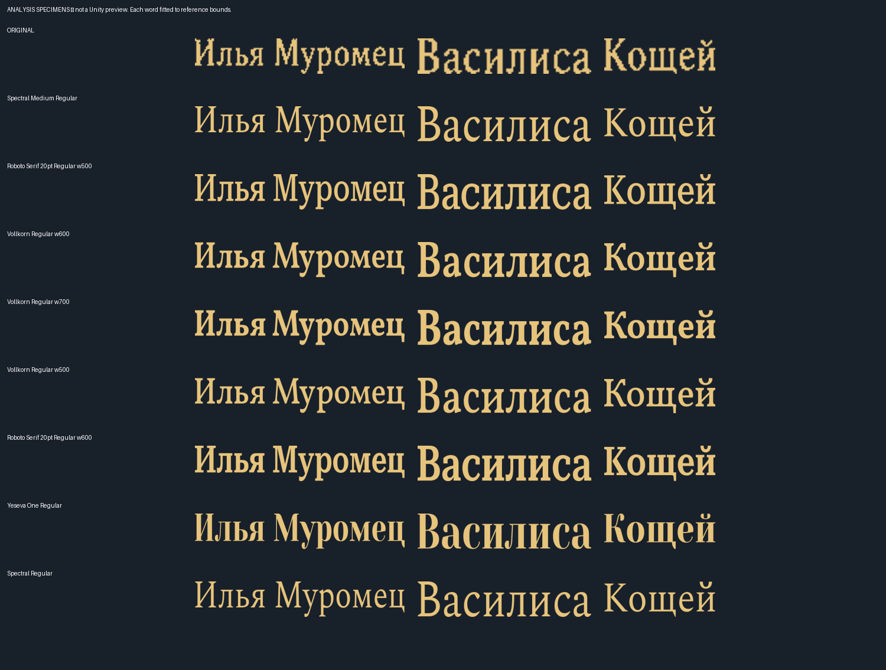
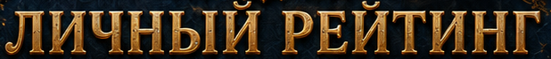
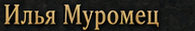
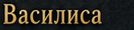
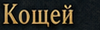
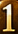
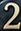
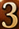
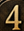
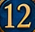

Exact identity remains unverified. These are diagnostic font specimens, not an implemented Unity page. No game fonts changed.
Read findings, evidence and limitations
| Area | Evidence | Conclusion |
|---|---|---|
| Title | WhatTheFont + Cyrillic render comparisons | Several similar faces; no exact match. |
| Player names | Monkton rejected for lack of Cyrillic; Minion specimen compared; 114 eligible local instances | Closer candidates exist; identity not confirmed. |
| Numerals | Evoque and Minion returned by full-line detector query | Digit resemblance does not establish the Russian typeface. |
Comparison sheets fit every word to the reference bounds. They deliberately remove gold shading and permit width adjustment; they are not unmodified font specimens or match-confidence scores.

Analysis crops only. The title, names and numbers were examined separately.
Title

Names



Rank numerals





No font binaries are included. Reference identity is unresolved; no claim that the source is AI-generated. No Unity or device verification was required for this research-only change.